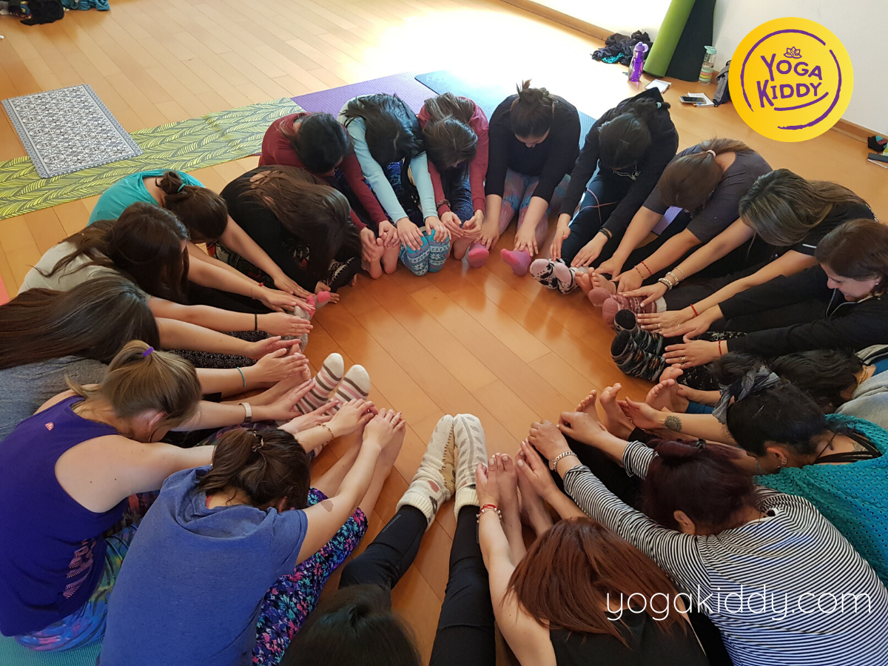
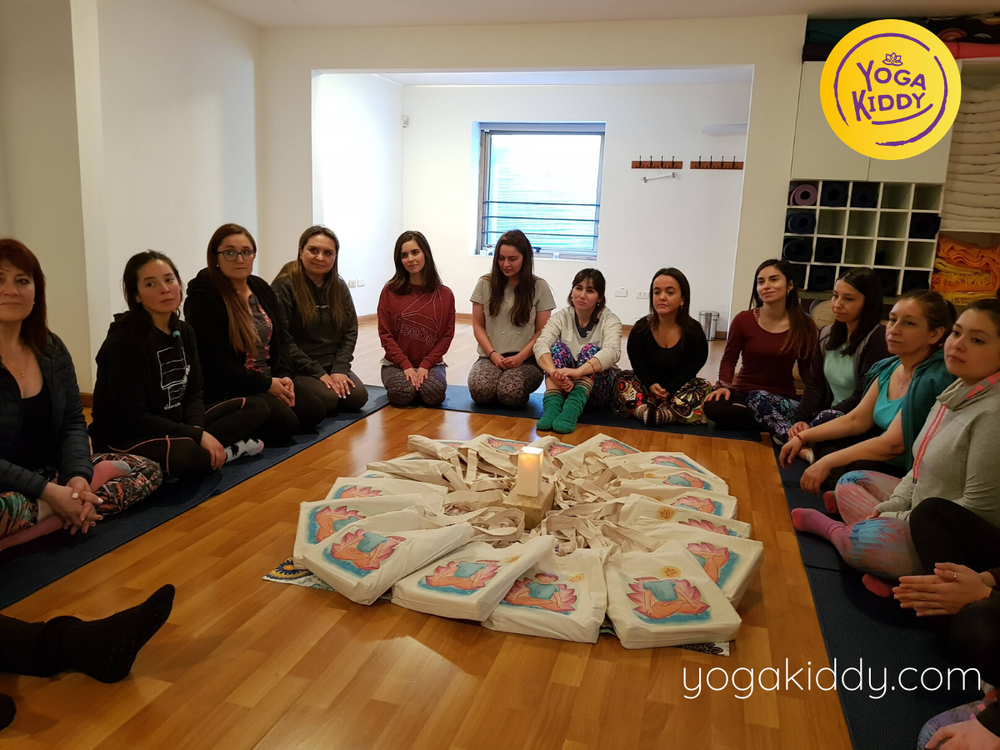
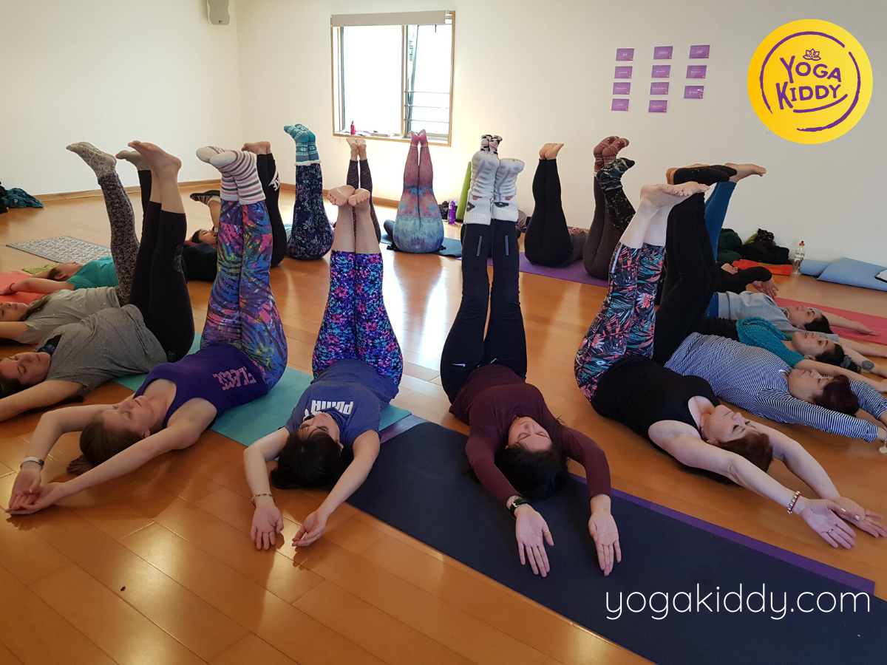
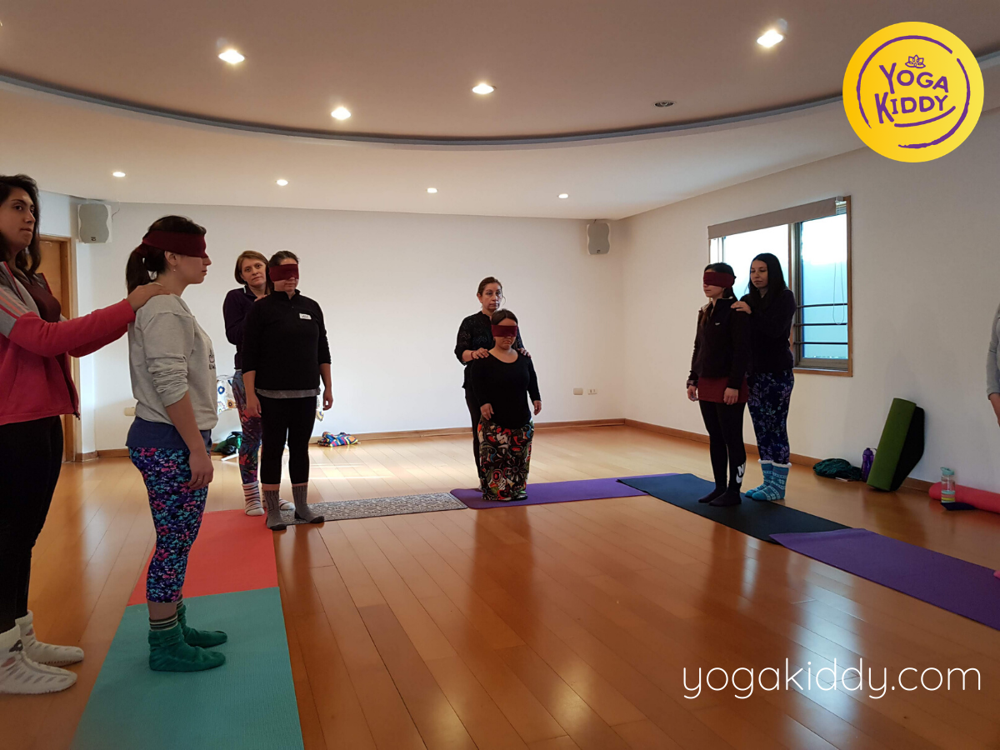
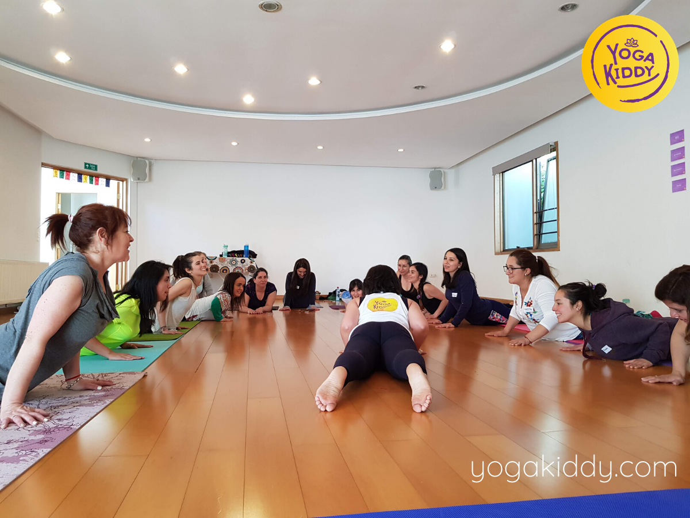
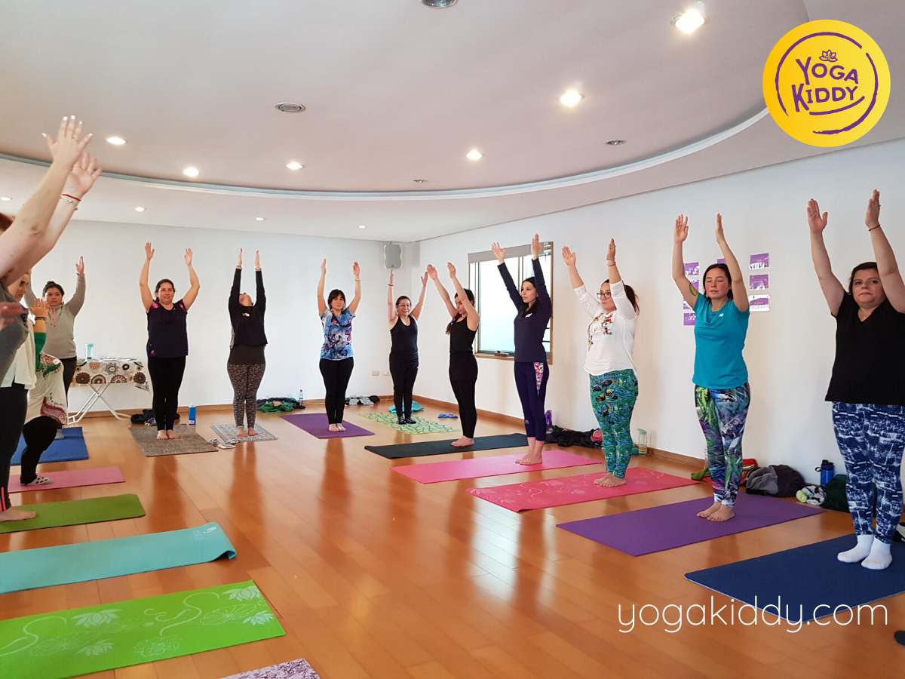
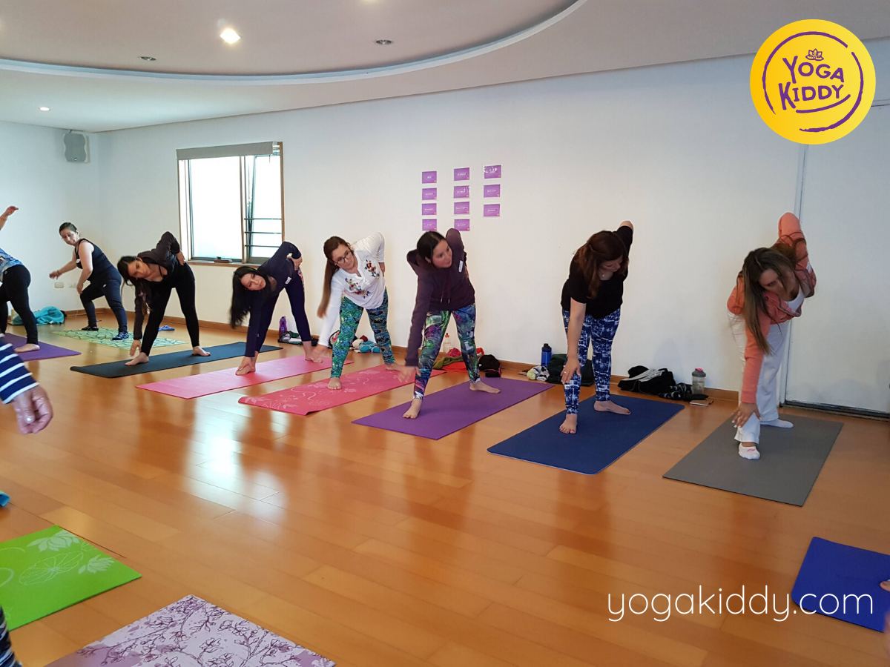
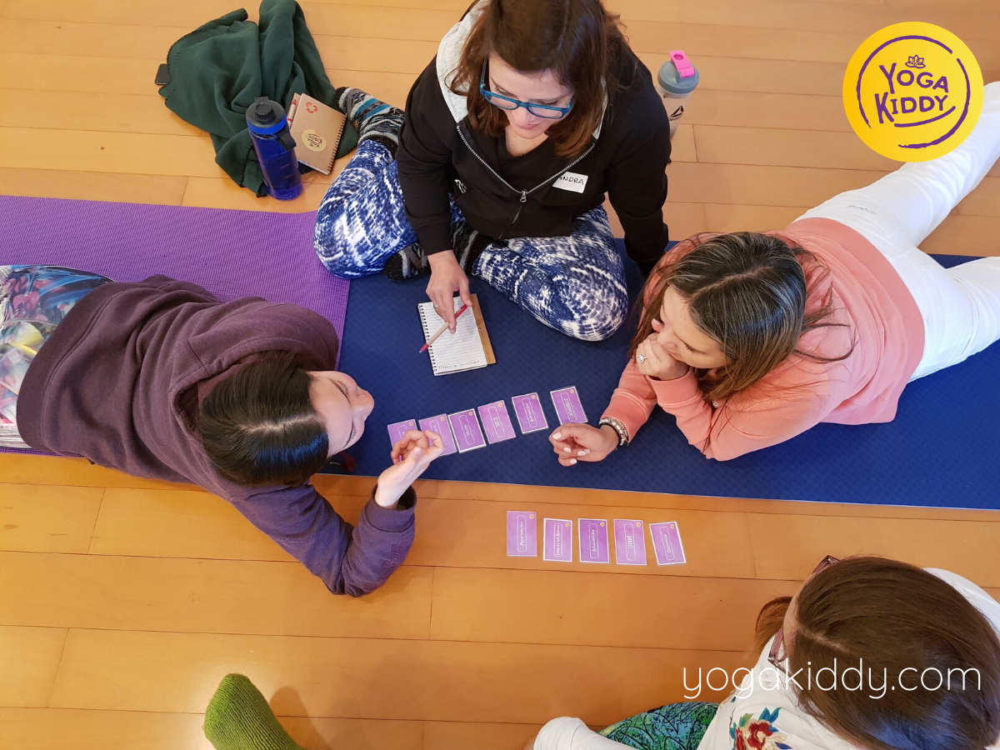
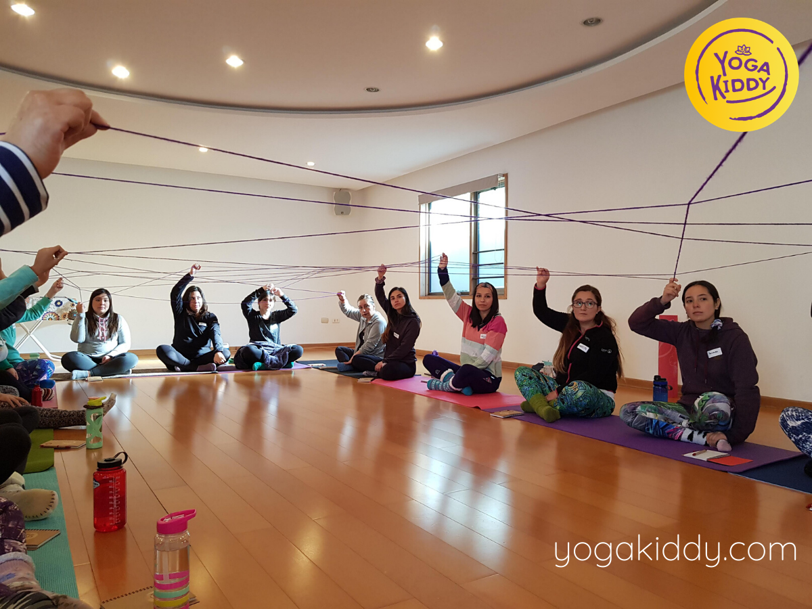
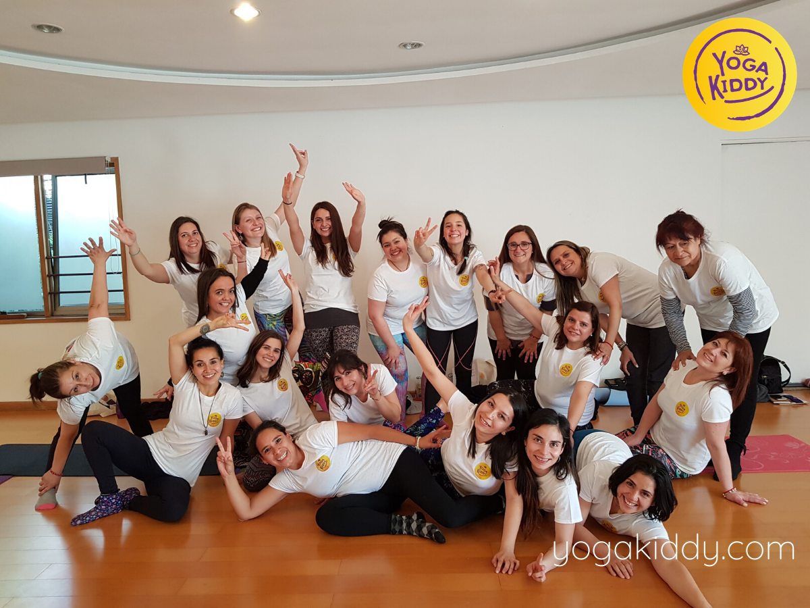

Como después de cada formación nos vamos con el corazón llenito de amor, de nuevas experiencias, aprendizajes y con una inmensa gratitud por la oportunidad de poder sembrar semillitas de Yoga.
*
Gracias por tanto a todas nuestras alumnas de Concepción!
😊🧘♂️🧘♀️📿🕉💜🇨🇱
*










Hola a todos, estuve el beneficio de poder venir a esta formación de monitor de yoga. Creo que llegue con muy pocas herramientas y me voy llena de emociones, de vivencias, de juegos, de cantos y de amor, de mucho amor. Se los recomiendo absolutamente y al 100% porque sirve para uno mismo y para poder de a poco con nuestra gotita y la semilla que cada una de las profesoras puso en nosotras, poder ir plantando en cada uno los niños para formar un mundo mejor y de otra manera ser mas felices y llenarnos de amor.
Hola a todos venimos saliendo de una nueva formación de YogaKiddy, 100% recomendado, hágalo no lo dude!
Quiero dejarles super invitados de que participen de YogaKiddy, es una experiencia maravillosa. Creo que hay pocas instancias de ayuda a los niños y YogaKiddy tiene por lo menos desde mi postura, desde la psicología algo super bonito para niños en riesgo social, para niños con problemas, con algunas patologías y aparte como un estilo de vida. Es hermoso, la experiencia es muy bonita asi que los invito a que participen y sigan a YogaKiddy